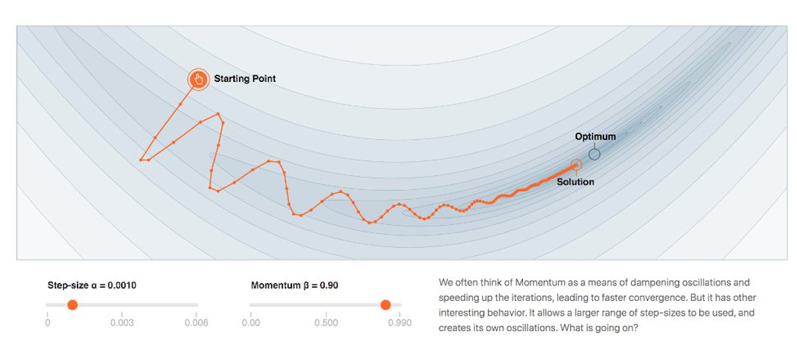
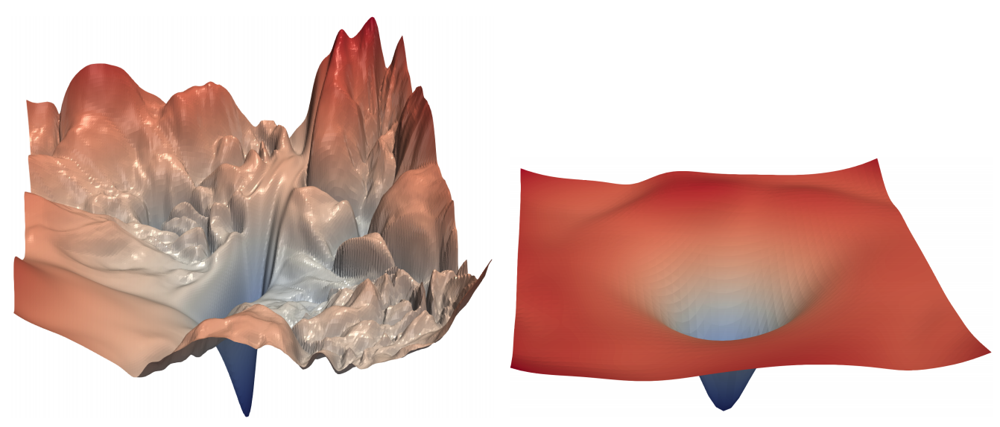
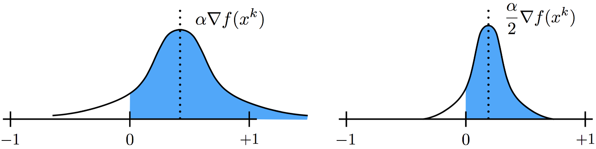
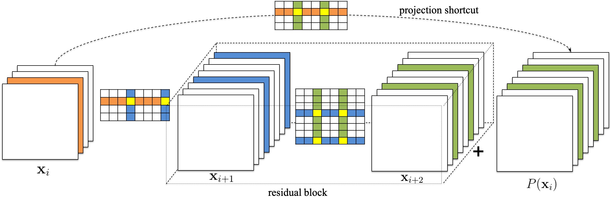

I'm an applied scientist at Amazon Web Services, Seattle, where I work on automatic and efficient machine learning algorithms for AWS computer vision services. I received PhD in computer science from University of Maryland, College Park, where I was fortunate to work with Prof. Tom Goldstein and Prof. Hanan Samet. My research focused on efficient and interpretable deep learning, including model pruning, quantization and loss surface visualization for convoluatinoal neural networks.
Publications
|
 |
Rethinking the Hyperparameters for Fine-tuning Hao Li, Pratik Chaudhari, Hao Yang, Michael Lam, Avinash Ravichandran, Rahul Bhotika, Stefano Soatto ICLR 2020 [video] |
|
 |
Visualizing the Loss Landscape of Neural Nets Hao Li, Zheng Xu, Gavin Taylor, Christoph Studer, Tom Goldstein NeurIPS 2018 [project / code / poster] |
|
 |
Training Quantized Nets: A Deeper Understanding Hao Li*, Soham De*, Zheng Xu, Christoph Studer, Hanan Samet, Tom Goldstein NeurIPS 2017 [poster] ICML 2017 PADL Workshop [talk] Google Best Student Paper |
|
 |
Pruning Filters for Efficient ConvNets Hao Li, Asim Kadav, Igor Durdanovic, Hanan Samet, Hans Peter Graf ICLR 2017 [poster] NeurIPS 2016 EMDNN Workshop |
Dissertation
|
Towards Fast and Efficient Representation Learning Hao Li University of Maryland, College Park, Aug 2018 [slides] |
Academic Services
- Journal Reviewer
- Journal of Machine Learning Research (JMLR) (editoral board reviewer)
- International Journal of Computer Vision (IJCV)
- IEEE Transactions on Pattern Analysis and Machine Intelligence (TPAMI)
- IEEE Transactions on Neural Network and Learning Systems (TNNLS)
- IEEE Transactions on Multimedia (TMM)
- Neurocomputing
- Conference Reviewer
- NeurIPS, ICML, ICLR, ICCV, CVPR, ECCV, KDD, AAAI